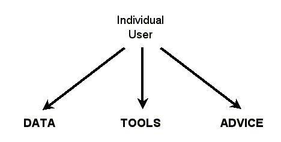
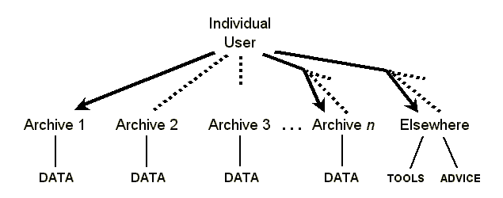
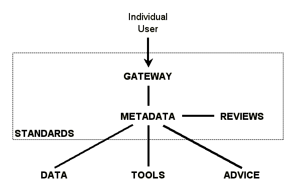

About this document.
This document has been prepared in conjunction with the workshop on Web-Based
Language Documentation and Description, held in Philadelphia on 12-15 December
2000. It is an overall vision statement summarizing what individual users want
in terms of online language documentation and description, describing the gap
that currently exists between what users want and what they can get, and
finally painting a picture of how an Open Language Archives Community would
function to close that gap.
Digital archiving of language documentation and description on the World-Wide Web holds the promise of unparalleled access to language information. But if it is not done well, it also offers the specter of frustration and chaos on an unparalleled scale. This paper presents an executive summary of our vision for the kind of infrastructure that would unlock the promise. Special focus is given to the seven pillars on which such an infrastructure would be erected.
The vision statement takes the form of a gap analysis. It begins by describing the ideal situation we are aiming for. The next section describes the actual situation we find today. The third section suggests what it would take to bridge the gap that separates the actual from the ideal and concludes by proposing the formation of an Open Language Archives Community as a way to embody the needed infrastructure. The final section gives pointers to other documents where the details of the proposal can be found.
The individuals who use and create language documentation and description are looking for three things: data, tools, and advice. These are the first three pillars on which the language archiving infrastructure must be constructed:
| DATA | Information that documents or describes a language of interest |
| TOOLS | Computational resources that facilitate creating or using language data |
| ADVICE | Help in knowing what data sources to rely on, what tools to use, and what practices to follow |
By DATA we mean any information that documents or describes a language. It could take any form, such as a published monograph, a computer data file, or even a shoe box full of hand-written index cards. The information could range in content from unanalyzed sound recordings to fully transcribed and annotated texts to a complete descriptive grammar.
By TOOLS we mean computational resources that facilitate creating, viewing, querying, or otherwise using language data. Tools include not just software programs, but also the digital resources that the programs depend on, such as fonts, stylesheets, and document type definitions.
By ADVICE we mean the kind of information an individual would typically solicit when they need help. The language archive user might want help in knowing what data sources are reliable versus which are not, help in knowing what tools to use in a particular situation, or help in knowing what practices to follow when creating new data.
Figure 1 shows a diagram summarizing the ideal situation in which the individual user has access to whatever data, tools, and advice are needed.
|  |
| Figure 1: Ideally the user has access as needed |
In actual fact today's user does not have ready access to the data, tools, and advice that are needed. Figure 2 offers a diagramatic view of the reality. Some archives (e.g. Archive 1) do have a site on the Internet which the user is able to find, so the resources of that archive are accessible. Other archives (e.g. Archive 2) are on the Internet, so the user could access them in theory, but the user has no idea they exist so they are not accessible in practice. Still other archives (e.g. Archive 3) are not even on the Internet. And there are potentially hundreds of archives (e.g. Archive n) that the user needs to know about. Tools and advice are out there as well, but are at many different sites.
|  |
| Figure 2: In reality the user can't always get there from here |
Figure 2 only seeks to illustrate the difficulty posed by a multiplicity of sites that may or may not be accessible. There are many other problems inherent in the current situation. For instance, the user may not be able to find all the existing data about the language of interest because different sites have called it by different names. The user may not be able to use an accessible data file for lack of being able to match it with the right tools. The user may locate advice that seems relevant but have no basis for judging its merits.
In order to bridge the gap, the individuals who use and create language documentation and description need a community that provides four things: a gateway, metadata, reviews, and standards. These are the remaining pillars on which the language archiving infrastructure must be constructed:
| GATEWAY | A single portal through which users can access all available data, tools, and advice |
| METADATA | Uniform descriptions of all available data, tools, and advice |
| REVIEWS | Peer evaluations of available data, tools, and advice |
| STANDARDS | Processes and protocols that enable the operation of the gateway and ensure the quality of metadata and reviews |
The GATEWAY is a single portal through which the user gains access to all available data, tools, and advice. The actual data, tools, and advice are still located on hundreds of sites all over the Internet, but the user need not know about any of them. By accessing the single gateway site, the user gains access to all available data, tools, and advice.
The secret to providing access to all available data, tools, and advice from one gateway is METADATA. Metadata is not the data itself, but data about the data. Thus even data that is not in digital form can openly be made known by publishing its metadata. Each available instance of data, tools, or advice is described in a metadata record that either includes a link to the full item or instructions on how to obtain it. Specialized metadata elements are used to meet requirements specific to language documentation like uniformly identifying languages or like matching data formats to the appropriate tools. The collection of all the available metadata records provides a combined catalog of the holdings of all participating language archives.
The REVIEWS offer peer evaluations of available data, tools, and advice. Peer review is an important function of any academic community and the language documentation community is no exception. The members of the community need a way to recommend good data, tools, and advice to their colleagues, as well as to report any problems, incompatibilities, or the like. Users need to be able to see these recommendations and warnings when they are searching the metadata catalog.
The final pillar which makes it possible for the community to function is STANDARDS. The standards are like a frame that encloses the core infrastructure of the community. The actual data, tools, and advice lie outside that frame—these need not be constrained by a community standard. For the other three pillars the opposite is the case; they must be governed by standards in order for the community to function. The gateway is made possible through a standard protocol for harvesting metadata from participating archives. The metadata records are governed by a standard that ensures uniformity of coding so that the metadata from hundreds of different sites can interoperate in a single combined catalog. The review process is governed by a standard that at one extreme makes it easy for any individual to post an evaluation, but at the other extreme defines the means by which the community can speak with one voice to recommend best practice to its members.
Figure 3 gives a diagram showing all seven pillars and how they relate. In a graphical form it summarizes how a community would function to bridge the gap between the individual user and all the data, tools, and advice that are out there on the Internet.
|  |
| Figure 3: Bridging the gap through community infrastructure |
Specifically, we are proposing the formation of the Open Language Archives Community. Based on a foundation that has already been laid by the Open Archives Initiative [www.openarchives.org], OLAC would add community-specific standards that meet the special needs of those who use and create language documentation and description.
This paper aims only to paint a high-level picture of the open language archiving vision. Readers interested in digging into the details of the proposal are referred to the following set of three papers (which also roughly parallel the first three sections of this vision statement):
The requirements document completes the circle by explaining how the Open Language Archives Community proposal addresses each of the identified requirements.